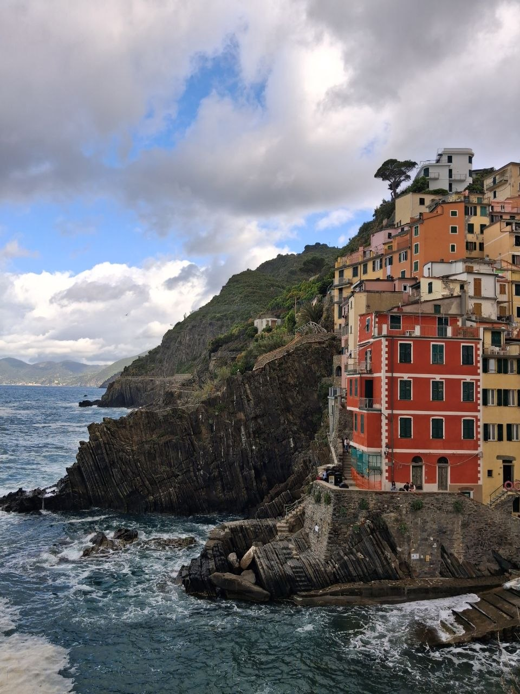
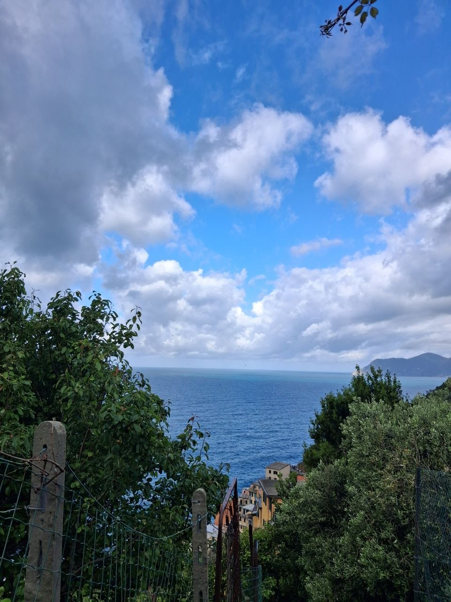
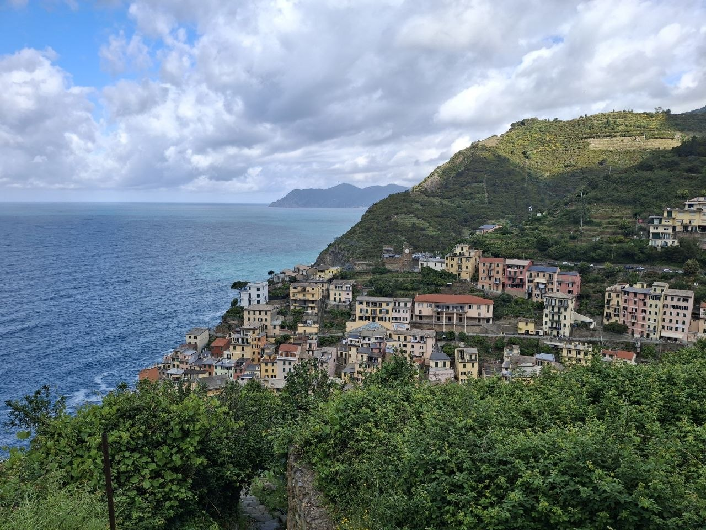
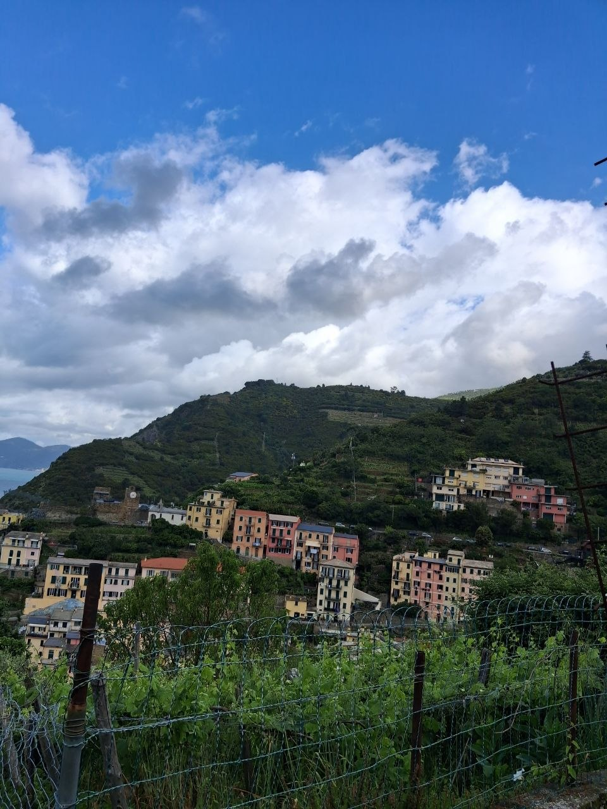
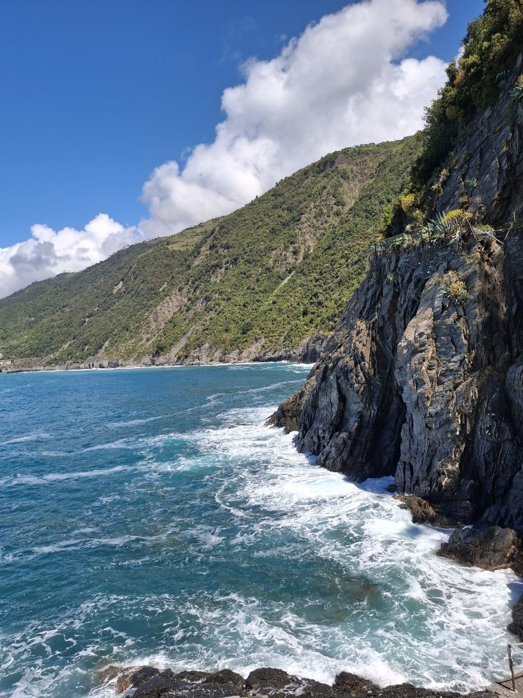
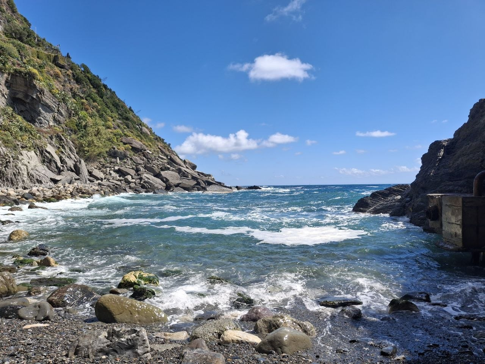
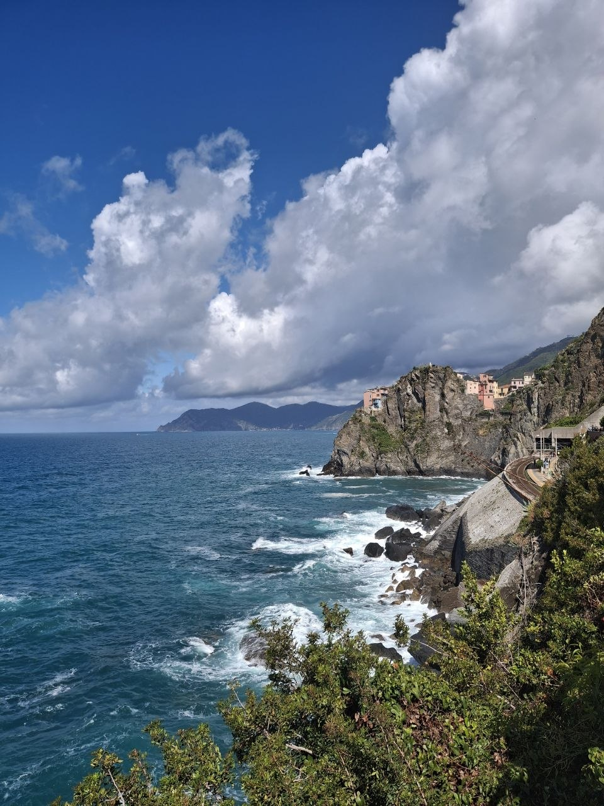
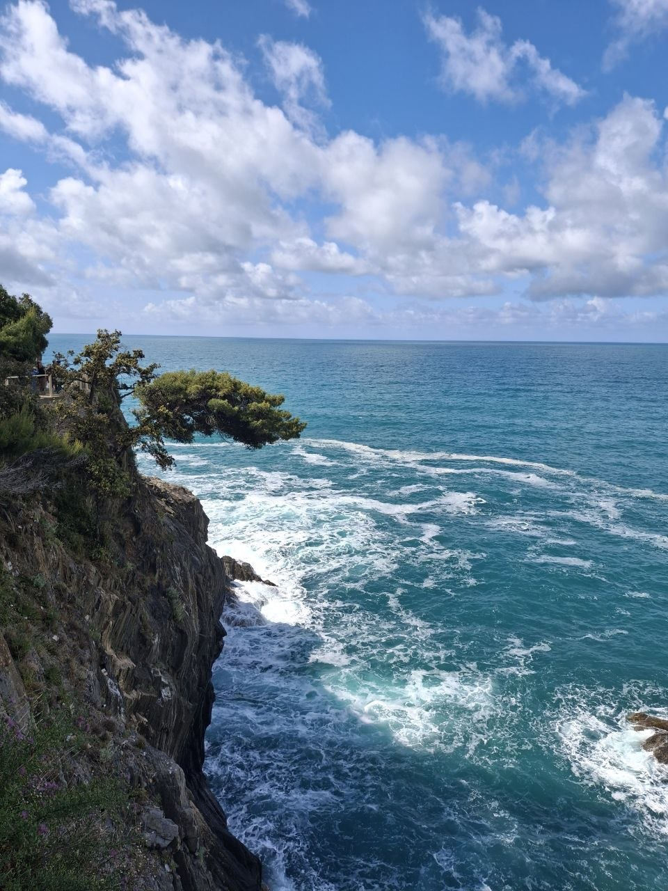
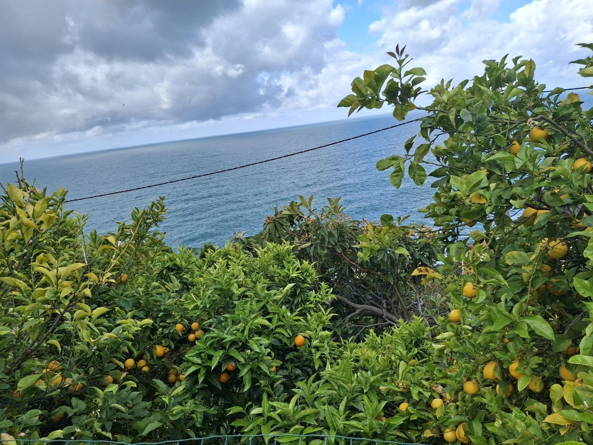

Cinque Terre is a beautiful coastal region in Italy known for its colorful villages, scenic hiking trails, and breathtaking views of the Mediterranean Sea. The five villages — Monterosso al Mare, Vernazza, Corniglia, Manarola, and Riomaggiore — each have their own unique charm and attract visitors from all around the world.
The area is famous for its traditional Italian atmosphere, fresh seafood, and picturesque landscapes. Visitors can travel between the villages by train, hiking paths, or boat while enjoying beaches, historic streets, and stunning sunsets along the coastline.








